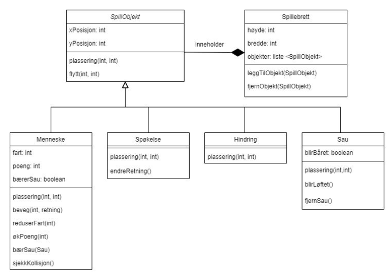

📄 Løsningsforslag: Eksamen#
Her er mine løsningsforslag til eksamen i Informasjonsteknologi 2.
Ta kontakt med meg på tobiasmelb@viken.no eller Teams hvis du finner noen feil eller om du har noen kommentarer.
Eksamen H23#
Dette er et løsningsforslag til eksamen H23. Du finner denne eksamen også på UDIR sine nettsider (lenke). Oppgavene er gjengitt her, men med små modifikasjoner.
Om eksamen fremover
Eksamensveiledningen for neste eksamen (V24) gir noen viktige hint om fremtiden for skriftlig eksamen IT2.
Første del skal dreies i en mer objektorientert retning.
Det kan bli bedt om testfunksjoner eller testmetoder. Se Testing II.
Det kan bli bedt om dynamiske brukergrensesnitt. Se Brukergrensesnitt.
Oppgave 1#
Hvilket av følgende er ikke et typisk kjennetegn på pseudokode? Velg riktig alternativ.
Den har uformell syntaks.
Den ligner på vanlig menneskespråk.
Den kan kjøres direkte på en datamaskin.
Den brukes ofte i planleggingsfasen av programmering.
Løsning
Pseudokode har uformell syntaks som ligner på vanlig menneskespråk og brukes ofte i planleggingsfasen av programmering. Pseudokode er ikke ment til å kjøres direkte på en datamaskin.
Den har uformell syntaks. ❌
Den ligner på vanlig menneskespråk. ❌
Den kan kjøres direkte på en datamaskin. ✅
Den brukes ofte i planleggingsfasen av programmering. ❌
Merk at oppgaven spør om hva som ikke er et kjennetegn for pseudokode.
Oppgave 2#
Hvilken av de følgende påstandene er riktige om for- og while-løkker innen programmering? Velg riktig alternativ.
En for-løkke kan bare brukes med tallsekvenser.
En while-løkke kjører alltid et bestemt antall ganger.
En for-løkke er best egnet når du vet hvor mange ganger løkken skal kjøre
En while-løkke kan ikke bruke en teller for å holde rede på hvor mange ganger den har kjørt.
Løsning
En for-løkke kan bare brukes med tallsekvenser. ❌
En while-løkke kjører alltid et bestemt antall ganger. ❌
En for-løkke er best egnet når du vet hvor mange ganger løkken skal kjøre. ✅
En while-løkke kan ikke bruke en teller for å holde rede på hvor mange ganger den har kjørt. ❌
En for-løkke er best egnet når du vet hvor mange ganger løkken skal kjøre.
Oppgave 3#
Hva er hovedprinsippet bak objektorientert programmering (OOP)? Velg riktig alternativ.
Å lage lineære og sekvensielle programkoder.
Å bryte ned et problem i et sett med funksjoner.
Å representere data og funksjoner som objekter.
Å minimere bruken av variabler.
Løsning
Å lage lineære og sekvensielle programkoder. ❌
Å bryte ned et problem i et sett med funksjoner. ❌
Å representere data og funksjoner som objekter. ✅
Å minimere bruken av variabler. ❌
Objektorientert programmering handler om å representere ting med objekter. Objekter er abstraksjoner som kan ha attributter (data/informasjon) og metoder (ting som objektet kan gjøre).
Oppgave 4#
Hvilke av de følgende sekvensene med pseudokode skriver ut tallene fra og med \(1\) til og med \(5\)? Flere alternativer kan være riktige. Velg riktige svar.
SET i TO 1
FOR hver i LESSER OR EQUAL 5
PRINT i
ENDFOR
SET i TO 1
WHILE i < 5
PRINT i
INCREMENT i
ENDWHILE
SET i TO 0
FOR hver i LESSER OR EQUAL 4
PRINT i+1
ENDFOR
SET i TO 1
WHILE i <= 5
PRINT i
INCREMENT i BY 2
ENDWHILE
Løsning
Riktige alternativ er \(1\) og \(3\).
Oppgave 5#
Et system som beregner billettprisen avhengig av kjøperens alder, bruker følgende regler for billettkategorier:
Hvis brukeren er \(15\) år gammel eller yngre, skal brukeren få barnebillett til \(30\) kroner.
Hvis brukeren er \(16\) år gammel eller eldre, skal brukeren få voksenbillett til \(50\) kroner.
Hvis brukeren er \(67\) år gammel eller eldre, skal brukeren få pensjonistbillett til \(35\) kroner.
Lag et flytdiagram for et program der brukeren skriver inn alderen på kjøperen og programmet regner ut og skriver ut riktig billettpris.
{kind=link}
Oppgave 6#
Du får i oppgave å finne det nest største tallet i en liste med tall. Dersom det finnes flere tall som er størst, skal ingen av disse regnes som nest størst.
a) Under finner du fire alternative løsninger for denne oppgaven skrevet i pseudokode. Hvilke to løsninger er riktige?
SET størst TO negativt uendelig tall
FOR hvert tall i listen
IF tall GREATER THAN størst
SET størst TO tall
ENDIF
ENDFOR
Fjern størst fra listen
SET nestStørst TO negativt uendelig tall
FOR hvert tall i listen
IF tall GREATER THAN nestStørst
SET nestStørst TO tall
ENDIF
ENDFOR
DISPLAY nestStørst
SET størst TO første tall i listen
SET nestStørst TO andre tall i listen
IF nestStørst GREATER THAN størst
Bytt størst og nestStørst
ENDIF
FOR hvert tall i listen med start fra tredje tall
IF tall GREATER THAN størst
SET nestStørst TO størst
SET størst TO tall
ELSEIF tall GREATER THAN nestStørst AND tall NOT EQUAL TO størst
SET nestStørst TO tall
ENDIF
ENDFOR
DISPLAY nestStørst
SET størst TO negativt uendelig tall
SET nestStørst TO negativt uendelig tall
FOR hvert tall i listen
IF tall GREATER THAN størst
SET nestStørst TO størst
SET størst TO tall
ELSEIF tall GREATER THAN nestStørst
SET nestStørst TO tall
ENDIF
ENDFOR
DISPLAY nestStørst
Sorter listen i synkende rekkefølge
FOR hvert tall i listen
IF tall NOT EQUAL TO neste tall i listen
DISPLAY neste tall i listen
avbryt for-løkken
ENDIF
ENDFOR
Løsning
Det finnes moteksempler som gjør at alternativ \(2\) og \(3\) ikke stemmer.
Pseudokode 2 fungerer ikke hvis man starter med to like store tall i listen, som også har størst verdi.
[(6), (6), 3, 5] -> størst, nest_størst = 6, 6
[6, 6, (3), 5] -> størst, nest_størst = 6, 6
[6, 6, 3, (5)] -> størst, nest_størst = 6, 6 ❌
Pseudokode 3 fungerer ikke hvis det er flere like store tall som er størst.
[6, 6, 3, 5] -> størst, nest_størst = -inf, -inf
[(6), 6, 3, 5] -> størst, nest_størst = 6, -inf
[6, (6), 3, 5] -> størst, nest_størst = 6, 6
[6, 6, (3), 5] -> størst, nest_størst = 6, 6
[6, 6, 3, (5)] -> størst, nest_størst = 6, 6 ❌
Da gjenstår alternativ \(1\) og \(4\) som riktige.
b) Vurder og sammenlikn de to løsningene du valgte i punkt a.
Løsning
Alternativ \(1\) kan tolkes på en måte som gjør programmet riktig, men også på en måte som blir feil.
Den første for-løkken i alternativ \(1\) finner det største tallet. Dette fjernes så fra listen. Deretter finner den andre for-løkken det gjenværende største tallet, som blir det nest største tallet.
Problemet med alternativet er at man må tolke linjen Fjern størst fra listen som Fjern alle elementer med verdi lik størst fra listen. Hvis bare et av de største tallene fjernes, vil dette ikke funke.
Med den første tolkningen blir en mulig gjennomgang av algoritmen [4, 5, 6, 6] -> [4, 5] -> 5 som er riktig.
… men med den alternative tolkningen blir gjennomgangen [4, 5, 6, 6] -> [4, 5, 6] -> 6 som er feil.
Alternativ \(4\) er relativt enkel å forstå. Her er en gjennomgang av algoritmen med et eksempel.
[1, 3, 5, 5, 4] -> [5, 5, 4, 3, 1] -> [(5), 5, 4, 3, 1] -> [5, (5), 4, 3, 1] -> 4
Skulle man implementert denne pseudokoden avhenger det av at man har en enkel måte å sortere en liste på. På denne måten er dette en pseudokode som bygger mer på abstraksjon enn de andre algoritmene. Denne pseudokoden ville nok vært kjempefin for andre som bruker Python, fordi vi har en enkel, innebygd funksjon Sorted() som gir oss en sortert versjon, men den kunne vært vanskeligere å implementere for noen som bruker et lavnivåspråk.
Oppgave 7#
Elementene i en liste skal sorteres etter i stigende rekkefølge etter følgende algoritme:
Man sammenlikner hvert element fra venstre til høyre i listen med neste element, og hvis elementet er større enn neste element, bytter de plass.
Deretter går man videre til neste element og sammenlikner på nytt frem til hele listen er gjennomgått.
Dette gjentas til hele listen gjennomgås uten at det forekommer noen ombyttinger.
Under finner du deler av pseudokoden for denne algoritmen. Her er a en liste med n elementer, og a[i] er elementet på plass i i listen.
SET i TO 0
FOR hver i LESSER THAN n - 1
IF a[i] GREATER THAN a[i+1]
CALL bytt_plass()
ENDIF
ENDFOR
a) Hva blir innholdet i listen etter at vi har kjørt programmet representert ved pseudokoden over for listen a = [8, 5, 2, 6, 12]? Velg riktig alternativ.
[5, 8, 2, 6, 12]
[5, 2, 8, 6, 12]
[5, 2, 6, 8, 12]
[2, 5, 6, 8, 12]
Løsning
Riktig alternativ er alternativ nummer \(3\).
[5, 8, 2, 6, 12] ❌
[5, 2, 8, 6, 12] ❌
[5, 2, 6, 8, 12] ✅
[2, 5, 6, 8, 12] ❌
Her er en tenkt gjennomgang av pseudokoden for listen a = [8, 5, 2, 6, 12]
[(8), 5, 2, 6, 12] -> [5, (8), 2, 6, 12] -> [5, 2, (8), 6, 12] -> [5, 2, 6, (8), 12] -> [5, 2, 6, 8, (12)] -> [5, 2, 6, 8, 12]
Vi ser at listen ikke er ferdigsortert. Denne prosessen må gjentas helt til det ikke forekommer noen ombyttinger.
b) Utvid pseudokoden slik at programmet den representerer, sorterer ferdig listen a i stigende rekkefølge etter algoritmen som vist øverst. Forklar endringene du gjør. Obs! Du må også lage pseudokode for funksjonen bytt_plass().
Løsning
Her er mitt forslag på pseudkode for hele sorteringsalgoritmen.
FUNCTION bytt_plass(a, i)
SET c TO a[i + 1]
SET a[i+1] TO a[i]
SET a[i] TO c
ENDFUNCTION
SET har_byttet TO True
WHILE har_byttet EQUALS True
SET i TO 0
SET har_byttet TO False
FOR hver i LESSER THAN n - 1
IF a[i] GREATER THAN a[i + 1]
CALL bytt_plass(a, i)
SET har_byttet TO True
ENDIF
ENDFOR
ENDWHILE
I funksjonen bytt_plass(a, i) bruker jeg en midlertidig variabel c for å kunne bytte om på variablene a[i] og a[i+1]. For å forstå hvorfor kan det være hjelpsomt å se på et tankeeksempel: Vi ser for oss to glass; ett glass med saft, og ett glass med vann. Hvis jeg ønsker å bytte om på hvilket glass som har saften, kan jeg bruke et tredje glass. Se på bildet.
I tillegg bruker jeg en tilstandsvariabel har_byttet som er True fra begynnelsen av, men som settes til False for hver gjennomgang av listen. Hvis det skjer et bytte settes den til True. Når det ikke har skjedd noen bytting, forblir har_byttet som False og while-løkken avsluttes.
c) Implementer pseudokoden i ditt programmeringsspråk. Listen skal leses inn automatisk, og den ferdig sorterte listen skal skrives til terminalvinduet eller vises i programmet.
Løsning
Her er en implementasjon av pseudokoden i Python. Jeg stusser litt med formuleringen av at listen skal leses inn automatisk og tolker det heller som at vi skal lage en funksjon som tar en liste som et argument og returnerer en sortert versjon av listen.
def sortert(a : list):
def bytt_plass(a : list, i : int):
c = a[i + 1]
a[i + 1] = a[i]
a[i] = c
har_byttet = True
while har_byttet:
har_byttet = False
for i in range(len(a) - 1):
if a[i] > a[i + 1]:
bytt_plass(a, i)
har_byttet = True
return a
# Bruker listen fra oppgaven som eksempel
a = [8, 5, 2, 6, 12]
print(a)
print(sortert(a))
""" Utskrift
print(a) -> [8, 5, 2, 6, 12]
print(sortert(a)) -> [2, 5, 6, 8, 12]
"""
Oppgave 8#
Kommer
Oppgave 9#
Kommer
Oppgave 10#
Kommer
Oppgave 11#
Du skal lage et program som leser inn og presenterer informasjon fra et datasett. Du finner datasettet i forberedelsesdelen for eksamen H23 på UDIR sine nettsider (lenke).
Programmet du lager i denne oppgaven skal inneholde en flerlinjet kommentar øverst som beskriver vurderinger og antagelser du har gjort. Du kan velge om du svarer på oppgave a og b i samme oversikt, eller om du lager en oversikt for hvert oppgavepunkt.
a) Lag et program som finner og presenterer de ti landene i datasettet som har flest YouTube-kanaler.
b) Utvid programmet til å regne ut og presentere gjennomsnittlig tall på abonnementer og videovisninger per kanal hvor hvert av disse landene.
Løsning
Her er et forslag for en kode som viser en oversikt over både a) og b).
"""
Jeg hopper over den første linjen i datafilen. Denne inneholder ikke data, men labels for data "rank,Youtuber,subscribers ...".
Jeg ignorerer også alle kanaler med land "nan", siden vi skal analysere data om land og forskjeller mellom disse.
"""
# Funksjon som gir mer naturlig utskrift av tall.
def tallutskrift(x : int):
if len(str(x)) > 9:
return str(x)[:-9] + " milliarder"
elif len(str(x)) > 6:
return str(x)[:-6] + " millioner"
elif len(str(x)) > 3:
return str(x)[:-3] + " tusen"
else:
return str(x)
with open("Global YouTube Statistics.csv") as file:
file.readline() # Hopper over en linje
linjer = file.readlines() # Leser av resten av linjene
# Finner alle land
land_liste = []
for x in linjer:
land = x.split(",")[7]
if land != "nan":
land_liste.append(land)
# Finner hvor mange forekomster det er av hvert land og setter det i en ordbok ("United States" : 313 ...)
land_counts = {}
for land in set(land_liste):
land_counts[land] = land_liste.count(land)
# Finner de top 10 mest populære landene (etter antall kanaler)
antall_kanaler = sorted(land_counts.values(), reverse=True)
topp_10_land = []
for n in range(10):
for x in land_counts.keys():
if land_counts[x] == antall_kanaler[n]:
topp_10_land.append(x)
# Skriver ut informasjon fra topp 10 land
print("Topp 10 land:")
for land in topp_10_land:
# Finner gjennomsnittlig antall abonnementer og videovisninger
abonnementer, videovisninger = [], []
for x in linjer:
if x.split(",")[7] == land:
abonnementer.append(float(x.split(",")[2]))
videovisninger.append(float(x.split(",")[3]))
print(f"{land} ({land_counts[land]} kanaler)")
print(f" Gjennomsnittlig mengde abonnementer: {tallutskrift(round(sum(abonnementer)/len(abonnementer)))}")
print(f" Gjennomsnittlig mengde videovisninger: {tallutskrift(round(sum(videovisninger)/len(videovisninger)))}")
"""
Utskrift:
Topp 10 land:
United States (313 kanaler)
Gjennomsnittlig mengde abonnementer: 23 millioner
Gjennomsnittlig mengde videovisninger: 11 milliarder
India (168 kanaler)
Gjennomsnittlig mengde abonnementer: 25 millioner
Gjennomsnittlig mengde videovisninger: 13 milliarder
Brazil (62 kanaler)
Gjennomsnittlig mengde abonnementer: 19 millioner
Gjennomsnittlig mengde videovisninger: 7 milliarder
United Kingdom (43 kanaler)
Gjennomsnittlig mengde abonnementer: 21 millioner
Gjennomsnittlig mengde videovisninger: 10 milliarder
Mexico (33 kanaler)
Gjennomsnittlig mengde abonnementer: 18 millioner
Gjennomsnittlig mengde videovisninger: 6 milliarder
Indonesia (28 kanaler)
Gjennomsnittlig mengde abonnementer: 19 millioner
Gjennomsnittlig mengde videovisninger: 5 milliarder
Spain (22 kanaler)
Gjennomsnittlig mengde abonnementer: 17 millioner
Gjennomsnittlig mengde videovisninger: 6 milliarder
Thailand (18 kanaler)
Gjennomsnittlig mengde abonnementer: 21 millioner
Gjennomsnittlig mengde videovisninger: 14 milliarder
South Korea (17 kanaler)
Gjennomsnittlig mengde abonnementer: 28 millioner
Gjennomsnittlig mengde videovisninger: 13 milliarder
Russia (16 kanaler)
Gjennomsnittlig mengde abonnementer: 25 millioner
Gjennomsnittlig mengde videovisninger: 14 milliarder
"""
Oppgave 12#
I denne oppgaven skal du lage et spill som heter Manic Mansion.
I Manic Mansion styrer spilleren et menneske som prøver å hente hjem sauene sine en etter en. På veien må mennesket ta seg forbi hindringer og unngå å bli tatt av spøkelser.
Spillet starter med et spillebrett, et menneske, et spøkelse, tre hindringer og tre sauer. Mennesket skal styres av spilleren, og målet med spillet er å komme seg over på den andre siden av brettet og hente en sau flest mulig ganger uten å være i kontakt med noen av spøkelsene.
Du bør sette av om lag to timer til denne oppgaven.
Krav:
Ved oppstart skal spillet bestå av et spillebrett, et menneskeobjekt, et spøkelsesobjekt, tre hindringsobjekter og tre saueobjekter.
Det skal være en liten frisone både på venstre og høyre side av spillebrettet hvor kun mennesker og sauer kan oppholde seg, mens det ikke kan være spøkelser eller hindringer der.
Spøkelses- og hindringsobjektene plasseres på tilfeldige steder på spillebrettet, menneskeobjektet i frisonen på venstre side av spillebrettet og sauene på tilfeldige steder i frisonen på høyre side av spillebrettet. Ingen objekter skal være oppå hverandre.
Ulike typer objekter skal være visuelt forskjellige.
Menneskeobjektet starter i ro og kan bevege seg i rolig hastighet opp, ned, til venstre eller til høyre. Retningen styres med piltaster (alternativt tastene W, S, A og D).
Spøkelsesobjektene starter på et tilfeldig sted på spillebrettet, men altså ikke i noen av frisonene. Spøkelsesobjektene beveger seg med konstart fart i en tilfeldig retning. Spøkelsesobjektene kan bevege seg på skrå i flere forskjellige vinkler. Når et spøkelse treffer kanten av spillebrettet eller kanten på en av frisonene, endrer spøkelset retning. Spøkelset blokkeres ikke av hindringer eller av andre spøkelser, men går tvers gjennom dem.
Når menneskeobjektet treffer en hinding eller kanten av spillebrettet, blokkeres menneskeobjektet helt til retningen endres.
Når menneskeobjektet treffer et saueobjekt, skal det følgende skje:
Saueobjektet fjernes fra spillebrettet (dette representerer at mennesket bærer sauen). (Alternativt: Saueobjektet «festes» til menneskeobjektet og følger mennesekeobjektets bevegelser.)
Farten til menneskeobjektet reduseres.
Fram til saueobjektet er levert på den andre siden, vil en kollisjon mellom menneskeobjektet og et annet saueobjekt føre til at spillet stoppes.
Når menneskeobjektet kommer tilbake til startsonen på venstre side av spillebrettet, skal det følgende skje:
Spilleren får et poeng.
Farten til menneskeobjektet økes til samme fart som ved spillets start.
Et nytt saueobjekt plasseres et tilfeldig sted i frisonen til høyre på spillebrettet.
Et nytt spøkelsesobjekt og et nytt hindringsobjekt plasseres på tilfeldige steder på spillebrettet.
Når menneskeobjektet, med eller uten sau, treffer et spøkelsesobjekt, skal spillet stoppes.
På figuren under ser du et forslag til en objektorientert modell for spillet.
a) Forkar modellen.
Løsning
Spillebrett er en klasse som inneholder flere SpillObjekt-objekter i en liste. Hvert SpillObjekt har noen felles attributter xPosisjon og yPosisjon, samt to metoder plassering(), som jeg antar gir en plassering til objektet, og flytt() som jeg antar flytter på posisjonen til objektet.
SpillObjekt har en del subklasser som arver fra den. Menneske har en heltallig fart, et heltallig poeng og en sannhetsverdi bærerSau som sier om mennesket bærer et Sau-objekt eller ikke. I tillegg har Menneske metodene beveg(), reduserFart(), økPoeng(), bærSau() og sjekkKollisjon().
Spøkelse arver fra SpillObjekt og har en ekstra metode endreRetning(). Hindring arver også fra SpillObjekt, men har ingen ekstra metoder eller attributter. Den siste klassen Sau arver også fra SpillObjekt og har en attributt blirBåret som en sannhetsverdi og en metode blirLøftet() som jeg antar er en del av den valgfrie funksjonaliteten rundt at sauen skal «følge med» spilleren, i tillegg til metoden fjernSau().
b) Ta utgangspunkt i modellen, gjør tilpasninger av egenskaper og metoder der du mener det er nødvendig, og implementer spillet slik det er beskrevet i kravene. Tilpasningene du gjør, skal dokumenteres med kommentarer i programkoden.
Løsning
Her er mitt forslag på en løsning. At man skal kunne implementere alle kravene under tidsfristen for denne oppgaven anser jeg som en smule optimistisk, selv om det kan være mulig.
"""
Her er spillet som jeg mener oppfyller kravene. Her er noen tilpasninger jeg har gjort til modellen.
1. Metodenavn og attributtnavn er skrevet om til Python-konvensjon.
- I tillegg er xPosisjon bare x, og yPosisjon bare y.
2. plassering()-metoden, som jeg antar skal brukes til å sette en posisjon, er heller tatt med i konstruktøren.
3. Spillebrettet inneholder ekstra attributter som trygg_sone, objekt_størrelse, og lister for de ulike typene spillobjekter.
- Årsaken til listene for de ulike typene spillobjekter er at det gjør koden for kollisjoner mye enklere.
4. Fjernet flytt()-metoden for SpillObjekt-objekter.
- Bare Spøkelse og Menneske skal kunne bevege seg i min implementasjon.
5. Menneske har fått bare to metoder, beveg() og sjekk.
- beveg() brukes for logikken for å flytte spilleren og hindre bevegelse.
- sjekk() brukes for logikken rundt kollisjon med Spøkelse, Sau eller ved å legge fra seg Sau.
6. Fjernet metoder og attributter fra Sau.
- Sau-objekter gjør ingenting. Logikken med bæring osv gjøres i Menneske.
7. Lagt til diverse attributter for de ulike objektene for bevegelseslogikk, størrelse, retning, hastighet og farge.
Jeg har ikke lagt til funksjonalitet for å vise poeng, fordi oppgaven ikke spør om dette spesifikt i kravene.
"""
import pygame
from random import randint, choice
class Spillebrett:
def __init__(self, høyde : int, bredde : int, trygg_sone : int, objekt_størrelse : int):
self.høyde = høyde
self.bredde = bredde
self.trygg_sone = trygg_sone
self.objekt_størrelse = objekt_størrelse
self.objekter = []
self.spøkelser = []
self.sauer = []
self.hindringer = []
def avslutt(self):
# Avslutter spillet
global running
running = False
def legg_til_objekt(self, x):
"""Legger til objekter i riktige lister, og sjekker om de overlapper eksisterende objekter."""
if type(x) == Menneske:
self.objekter.append(x)
elif type(x) == Hindring:
if x.rect.collidelist(self.hindringer) == -1:
# Hvis den nye hindringen ikke kolliderer med noen andre
self.hindringer.append(x)
self.objekter.append(x)
else:
# Hvis den kolliderer, prøv igjen.
self.legg_til_objekt(Hindring(randint(sb.trygg_sone, sb.bredde - sb.trygg_sone - sb.objekt_størrelse), randint(0, sb.høyde)))
elif type(x) == Spøkelse:
if x.rect.collidelist(self.spøkelser) == -1:
# Hvis det nye spøkelset ikke kolliderer med noen andre spøkelser
self.spøkelser.append(x)
self.objekter.append(x)
else:
# Hvis det kolliderer, prøv igjen
self.legg_til_objekt(Spøkelse(randint(sb.trygg_sone, sb.bredde - sb.trygg_sone - sb.objekt_størrelse), randint(0, sb.høyde)))
elif type(x) == Sau:
if x.rect.collidelist(self.sauer) == -1:
# Hvis den nye sauen ikke kolldierer med noen andre
self.sauer.append(x)
self.objekter.append(x)
else:
# Hvis den kolliderer, prøv igjen
self.legg_til_objekt(Sau(randint(sb.bredde - sb.trygg_sone, sb.bredde - sb.objekt_størrelse), randint(0, sb.høyde - sb.objekt_størrelse)))
def fjern_objekt(self, x):
"""Fjerner objekter."""
if type(x) == Hindring:
self.hindringer.remove(x)
self.objekter.remove(x)
elif type(x) == Spøkelse:
self.spøkelser.remove(x)
self.objekter.remove(x)
elif type(x) == Sau:
self.sauer.remove(x)
self.objekter.remove(x)
class SpillObjekt:
def __init__(self, x : int, y : int):
self.x = x
self.y = y
self.size = sb.objekt_størrelse
self.rect = pygame.Rect(x, y, self.size, self.size)
self.color = "gray"
def oppdater(self):
"""Tegner objekter og oppdaterer rect-objektet deres."""
pygame.draw.rect(screen, self.color, self.rect)
self.rect = pygame.Rect(self.x, self.y, self.size, self.size)
class Menneske(SpillObjekt):
def __init__(self, x : int, y : int):
super().__init__(x, y)
self.color = "green"
self.hastighet = 4
self.poeng = 0
self.retning = [0, 0]
self.har_sau = False
def beveg(self):
"""Beveger spilleren avhengig av retning. Kontrollerer bevegelse i møte med vegger og hinder."""
# Bestemmer retning
self.retning = [0, 0]
keys = pygame.key.get_pressed()
if keys[pygame.K_d] or keys[pygame.K_RIGHT]:
self.retning = [1, 0]
if keys[pygame.K_a] or keys[pygame.K_LEFT]:
self.retning = [-1, 0]
if keys[pygame.K_w] or keys[pygame.K_UP]:
self.retning = [0, -1]
if keys[pygame.K_s] or keys[pygame.K_DOWN]:
self.retning = [0, 1]
# Sjekker fremtidig kollisjon med Hindring ved å lage en boks i retningen spilleren er på vei og sjekke kollisjon med den.
sjekk_boks = pygame.Rect(self.x + self.hastighet * self.retning[0], self.y + self.hastighet * self.retning[1], self.size, self.size)
if sjekk_boks.collidelist(sb.hindringer) == -1:
# Sjekker kantene også
if sjekk_boks.left > 0 and sjekk_boks.top > 0 and sjekk_boks.left < sb.bredde - sb.objekt_størrelse and sjekk_boks.top < sb.høyde - sb.objekt_størrelse:
self.x += self.hastighet * self.retning[0]
self.y += self.hastighet * self.retning[1]
def sjekk(self):
"""Sjekker spill-logikk som kollisjon med spøkelse, sau og levering av sau"""
# Sjekker kollisjon med Spøkelse
if self.rect.collidelist(sb.spøkelser) != -1:
sb.avslutt()
# Sjekker kollisjon med Sau
if self.rect.collidelist(sb.sauer) != -1 and self.har_sau:
sb.avslutt()
elif self.rect.collidelist(sb.sauer) != -1 and not self.har_sau:
self.hastighet = 2
self.color = "darkgreen"
self.har_sau = True
sb.fjern_objekt(sb.sauer[self.rect.collidelist(sb.sauer)])
# Sjekker om spilleren får levert en Sau
if self.x < sb.trygg_sone and self.har_sau:
self.poeng += 1
self.hastighet = 4
self.color = "green"
self.har_sau = False
sb.legg_til_objekt(Hindring(randint(sb.trygg_sone, sb.bredde - sb.trygg_sone - sb.objekt_størrelse), randint(0, sb.høyde)))
sb.legg_til_objekt(Spøkelse(randint(sb.trygg_sone, sb.bredde - sb.trygg_sone - sb.objekt_størrelse), randint(0, sb.høyde)))
sb.legg_til_objekt(Sau(randint(sb.bredde - sb.trygg_sone, sb.bredde - sb.objekt_størrelse), randint(0, sb.høyde - sb.objekt_størrelse)))
class Spøkelse(SpillObjekt):
def __init__(self, x : int, y : int):
super().__init__(x, y)
self.retning = choice([[1, 1], [-1, 1], [-1, -1], [1, -1]])
self.hastighet = 1
self.color = "red"
def oppdater(self):
"""Tegner, oppdaterer posisjon og håndterer retningsendring av spøkelset."""
pygame.draw.rect(screen, self.color, self.rect)
self.rect = pygame.Rect(self.x, self.y, self.size, self.size)
self.x += self.hastighet * self.retning[0]
self.y += self.hastighet * self.retning[1]
if self.x < sb.trygg_sone or self.x > sb.bredde - sb.trygg_sone - sb.objekt_størrelse:
self.retning[0] *= -1
elif self.y < 0 or self.y > sb.høyde - sb.objekt_størrelse:
self.retning[1] *= -1
class Hindring(SpillObjekt):
def __init__(self, x : int, y : int):
super().__init__(x, y)
class Sau(SpillObjekt):
def __init__(self, x : int, y : int):
super().__init__(x, y)
self.color = "white"
# Initialiserer spillebrettet og sb.objekt_størrelse
sb = Spillebrett(bredde = 500, høyde = 500, trygg_sone = 100, objekt_størrelse = 10)
# Initialiserer Pygame-objekter
pygame.init()
screen = pygame.display.set_mode((sb.høyde, sb.bredde))
clock = pygame.time.Clock()
# Initialiserer SpillObjekter
spiller = Menneske(randint(0, sb.trygg_sone), sb.høyde/2)
sb.legg_til_objekt(spiller)
sb.legg_til_objekt(Spøkelse(randint(sb.trygg_sone, sb.bredde - sb.trygg_sone - sb.objekt_størrelse), randint(0, sb.høyde)))
for n in range(3):
sb.legg_til_objekt(Hindring(randint(sb.trygg_sone, sb.bredde - sb.trygg_sone - sb.objekt_størrelse), randint(0, sb.høyde)))
sb.legg_til_objekt(Sau(randint(sb.bredde - sb.trygg_sone, sb.bredde - sb.objekt_størrelse), randint(0, sb.høyde - sb.objekt_størrelse)))
running = True
while running:
# Avslutter løkken
for event in pygame.event.get():
if event.type == pygame.QUIT:
running = False
# Tegner bakgrunnen
screen.fill("black")
# Tegner trygge soner
pygame.draw.rect(screen, pygame.Color(0, 30, 0), pygame.Rect(0, 0, sb.trygg_sone, sb.høyde))
pygame.draw.rect(screen, pygame.Color(0, 30, 0), pygame.Rect(sb.bredde - sb.trygg_sone, 0, sb.trygg_sone, sb.høyde))
# Oppdaterer objekter
for x in sb.objekter:
x.oppdater()
# Oppdaterer og beveger spilleren
spiller.beveg()
# Sjekker spillerens kollisjon med sau eller spøkelse og om spilleren skal gi fra seg en sau
spiller.sjekk()
# Oppdaterer hele skjermen
pygame.display.flip()
# Forsikrer at spillet kjører i maksimalt 60 FPS.
clock.tick(60)
# Avslutter spillet
pygame.quit()